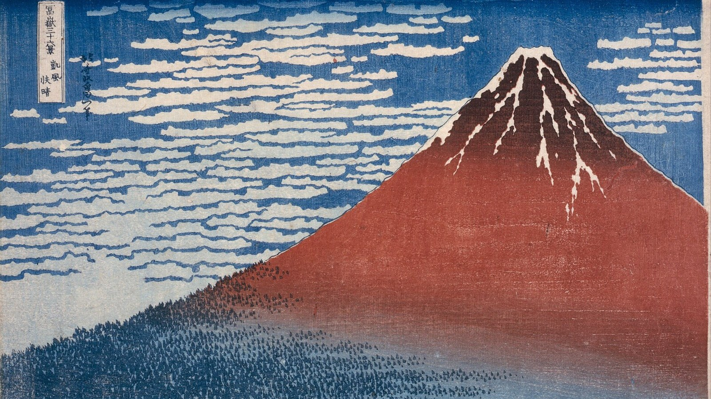
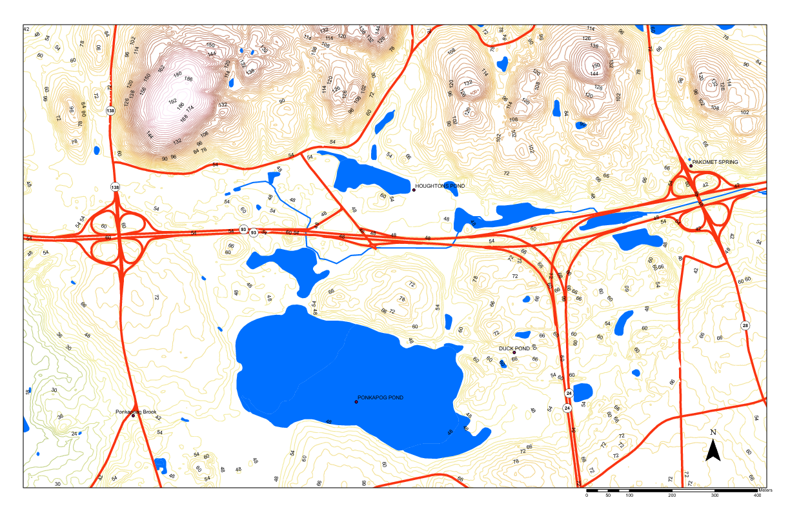
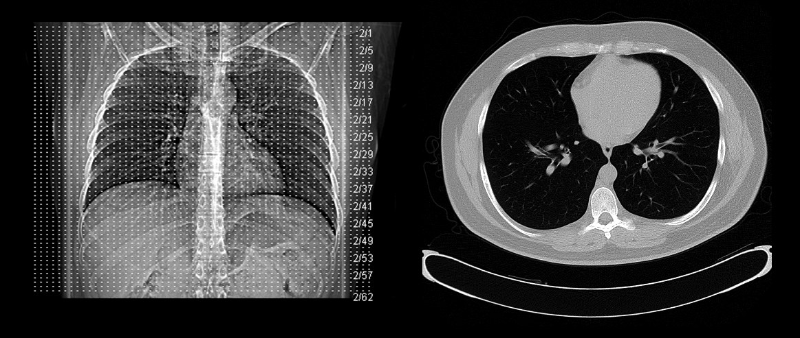
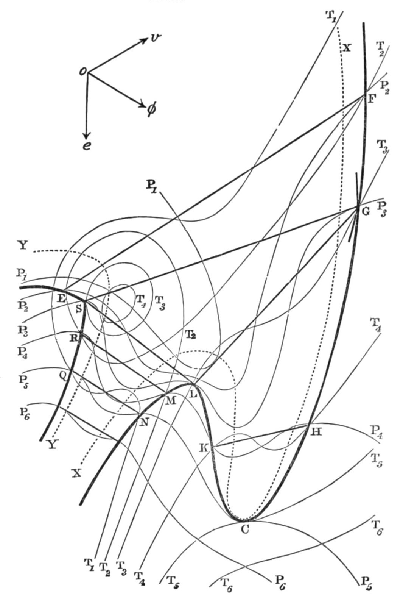
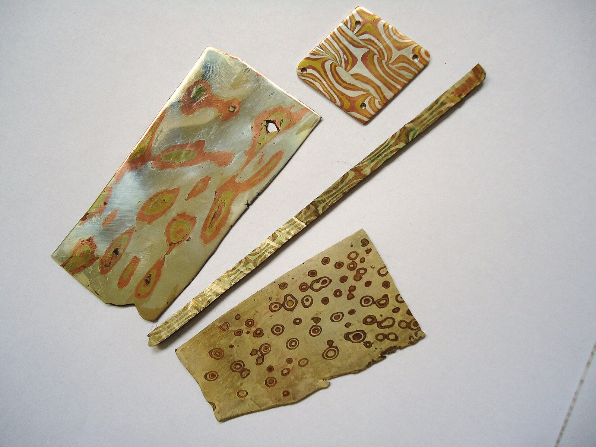
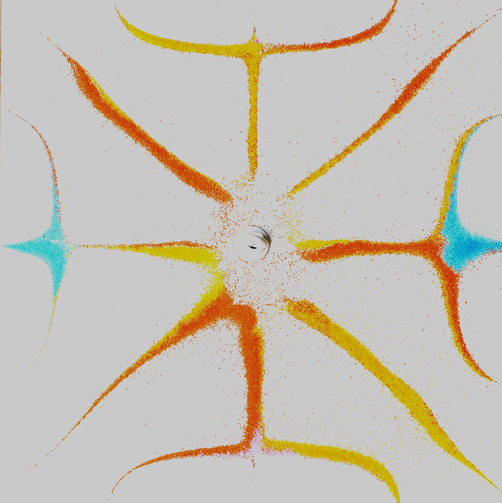

第11回
同じ山でも、東へ登るのと北へ登るのとでは、傾きが違う。
葛飾北斎『冨嶽三十六景 凱風快晴』（約1830年）の一部／Public domain／Wikimedia Commons（横長に切り出した）
変数が 2 つ以上ある関数を微分するときの最重要の問いは、「何を固定して、どの変数を動かしているか」である。偏微分 $\partial f/\partial x$ を、他の変数を固定した 1 変数の微分として定義し、書き方の流派（$\partial_x f$、$f_x$、熱力学の $(\partial f/\partial x)_y$）と、固定の省略の段階を並べ、高階偏微分と順序交換（成り立つ条件と反例）までを、数で確かめながら進む。
第1回から続けて、新しい記号は緑色の枠（記号）で「①読み方 ②日本語での意味 ③省略していない書き方 ④どこで出会うか」を書く。この回でいちばん省略が多いのは、偏微分の記号が「何を固定したか」を書かないことである。省略の段階の箱で 1 段ずつ示し、以後その箱にリンクして戻れるようにする。
1 変数の微分（第7回）で習った内容は、使うたびにリンクを張る。覚えている人は飛ばしてよい。導出は、文字だけでなく具体的な数で一度ためしてから一般の場合に進む。
最初に、この回で新しく説明する記号と、前の回で説明済みの記号を分けて並べる。右の列の「→」で説明のある場所へ飛べる。
| 記号 | 読み方 | ざっくりした意味 | 説明 |
|---|---|---|---|
| $\dfrac{\partial f}{\partial x}$ | デル・エフ・デル・エックス（パーシャル） | $y$ などの他の変数を固定して、$x$ で微分したもの | →2.1 |
| $\partial_x f$、$f_x$ | デル・エックス・エフ、エフ・エックス | $\dfrac{\partial f}{\partial x}$ の短い書き方 | →3.1 |
| 省略の段階（偏微分） | 点・引数・固定した変数・分数の形を、1 つずつ省く | →3.2 | |
| $\left(\dfrac{\partial f}{\partial x}\right)_y$ | デル・エフ・デル・エックス、$y$ 固定 | $y$ を固定して $x$ で微分したもの（熱力学の流儀） | →4.2 |
| $\dfrac{\partial^2f}{\partial x^2}$、$\dfrac{\partial^2f}{\partial x\,\partial y}$、$f_{xy}$ | デル・に・エフ・デル・エックス・に乗 など | もう一度偏微分したもの（高階偏微分） | →5.1 |
| 記号 | 意味 | 初出 |
|---|---|---|
| $=$、$:=$、$\approx$ | 等しい／左の名前を右の式で決める／ほぼ等しい | 第1回 2.1、2.2、2.4 |
| $x_i$（添字）、$x^2$（冪）、$f'$（プライム） | 番号・ラベル／冪／導関数または別のもの | 第1回 4.1、4.2、4.4 |
| 省略の段階（S0, S1, …） | 省略の度合いを段階で呼ぶ | 第1回 6.1 |
| $\in$、$\forall$、$\exists$ | 属する／すべての／存在する | 第2回、第2回、第2回 |
| $\mathbb R,\ \mathbb R^2$（直積） | 実数全体／実数の組 $(x,y)$ 全体 | 第2回、第2回 |
| $f\colon A\to B$、$f(x)$、$f\circ g$ | 関数、関数の値、合成 | 第3回、第3回、第3回 |
| 多変数関数 $f(x,y)$ | 入力が 2 つ以上の関数 | 第3回 6.1 |
| 引数の省略（$\psi(x,t)\to\psi(x)\to\psi$） | 関数の引数を書かない | 第3回 7.1 |
| $\displaystyle\lim_{h\to0}$（極限）、連続 | 限りなく近づく／つながったグラフ | 第6回、第6回 |
| $\dfrac{df}{dx}$、$f'$（導関数） | 1 変数の微分 | 第7回、第7回 |
| $\Delta x$（変化量） | $x$ の変化の大きさ | 第7回 |
| 微分の規則（積・商・合成） | 積の微分、合成関数の微分など | 第7回 |
| $df$、$dx$（微分） | $dx$ を独立した記号として扱う見方 | 第8回 |
| $\displaystyle\int f\,dx$ の省略（どの変数で積分するか） | 積分変数は $dx$ が決める | 第10回 3.3 |
PHOTO 1｜現実

同じ高さの点をつないだ等高線が、起伏を地図の上に描き出す。
Belg4mit（2008年、米国マサチューセッツ州ブルーヒルズの池のあたりの地形図）／CC0／Wikimedia Commons（縮小した）
MITATE 1｜見立て
砂に引いた長い筋が、ゆるい曲線を描いて並んでいる。
Basile Morin（2019年、銀閣寺の砂の庭）／CC BY-SA 4.0／Wikimedia Commons（縮小した）
第7回で、1 変数の関数 $f(x)$ の微分（$\frac{df}{dx}$）を学んだ。それは「$x$ を少し動かしたとき、$f$ がどれだけ変わるか」を表す。ところが、現実の量は変数が 1 つとは限らない。
これらを第3回の多変数関数と呼ぶ。このとき、「$x$ を少し動かしたとき、$f$ がどれだけ変わるか」と聞かれても、答えが 1 つに決まらない。山の例なら、「東へ 1 歩進むと高さが何 m 変わるか」は、北へ進まず東だけに進むと決めて初めて答えが出る。「東へ 1 歩、同時に北へ 1 歩」では、別の答えになる。
そこで最初の方針を決める：1 つの変数だけを動かし、他の変数は動かさない（固定する）。こうすれば、動くのは 1 変数だけなので、第7回の微分がそのまま使える。これが偏微分の考え方のすべてである。
2 変数の関数 $f(x,y):=x^2+3xy$ を考える（$:=$、冪、掛け算の省略は第1回）。点 $(x,y)=(1,2)$ での値は
$$f(1,2)=1^2+3\cdot1\cdot2=1+6=7$$
$y$ を $2$ に固定して、$x$ だけを動かす。$x$ を $1$ から $1.1$ に増やすと、
$$f(1.1,\,2)=1.1^2+3\cdot1.1\cdot2=1.21+6.6=7.81$$
変化の割合（$\Delta x$ あたりの $f$ の増え方）は $\dfrac{7.81-7}{1.1-1}=\dfrac{0.81}{0.1}=8.1$。$x$ の増やし方を $0.01$ にすると、$f(1.01,2)=1.0201+6.06=7.0801$ で、$\dfrac{7.0801-7}{0.01}=\dfrac{0.0801}{0.01}=8.01$。増やし方を小さくすると $8$ に近づく。
次に、$x$ を $1$ に固定して、$y$ だけを動かす。$y$ を $2$ から $2.1$ に増やすと、$f(1,2.1)=1+3\cdot1\cdot2.1=1+6.3=7.3$。変化の割合は $\dfrac{7.3-7}{0.1}=\dfrac{0.3}{0.1}=3$。
| 動かす変数 | 固定する変数 | 変化の割合（点 $(1,2)$） |
|---|---|---|
| $x$ | $y=2$ | $8$ に近づく |
| $y$ | $x=1$ | $3$ |
同じ点 $(1,2)$ でも、どちらを動かすかで、変化の割合は $8$ と $3$ に分かれる。これを 1 つの数にまとめることはできない。だから、「どの変数を動かして、何を固定したか」を毎回区別して書く必要がある。
表の2行を、$xy$ 平面の上に描くと図1.1 になる。同じ点 $(1,2)$ から、横（$x$ だけ）と縦（$y$ だけ）の2通りに $0.1$ ずつ進む。
PHOTO 2｜現実

体を一つの高さで輪切りにした断面が、右の像である。
Ptrump16（2022年、胸部のCT像）／CC BY-SA 4.0／Wikimedia Commons（縮小した）
1.2 の計算を、一般の点 $(a,b)$ で式にする。$x$ を動かして $y=b$ を固定すると、$f(x,b)$ は $x$ だけの関数になる。この 1 変数関数に、第7回の微分の定義（$\frac{df}{dx}$ の S0、極限）を使う。
①読み方：「デル・エフ・デル・エックス、$a,b$ での値」。「パーシャル・エフ・パーシャル・エックス」とも読む。記号 $\partial$ は「デル」「ラウンド・ディー」「パーシャル」と読む（小文字の d の筆記体ではなく、第7回の $d$ とは別の記号）。
②日本語での意味：$y$ を $b$ に固定したまま、$x$ だけを $a$ のまわりで動かしたときの、$f$ の瞬間の変化の割合。1 変数関数 $g(x):=f(x,b)$ の、$x=a$ での微分係数 $g'(a)$ と同じ。
③省略していない書き方：
$$\frac{\partial f}{\partial x}(a,b):=\lim_{h\to0}\frac{f(a+h,\,b)-f(a,\,b)}{h}$$
$y$ の方向についても、$x=a$ を固定して
$$\frac{\partial f}{\partial y}(a,b):=\lim_{k\to0}\frac{f(a,\,b+k)-f(a,\,b)}{k}$$
と定める。第7回の $\frac{df}{dx}$ の定義と見比べると、分子の 2 つの項で、動かさない変数の値（$b$ や $a$）が同じことだけが違う。ここで $h,k$ は $x,y$ の変化量（$\Delta x$ にあたる）、$\lim$ は第6回の極限。
④どこで出会うか：熱力学、波動方程式・熱方程式（第40〜43回）、勾配（第23回）、最適化（第51回）、誤差伝播（第45回）。
最小の具体例で、定義を実行する。$f(x,y)=x^2+3xy$、点 $(a,b)=(1,2)$。
したがって $\dfrac{\partial f}{\partial x}(1,2)=8$。1.2 の差分の値 $8.1,\ 8.01$ が $8$ に近づいていたこととつながっている。$y$ 方向は、$f(1,2+k)=1+3(2+k)=7+3k$ なので、$\dfrac{f(1,2+k)-f(1,2)}{k}=\dfrac{3k}{k}=3$ （$k$ によらず $3$）。よって $\dfrac{\partial f}{\partial y}(1,2)=3$。
定義の分数 $\dfrac{f(1+h,2)-f(1,2)}{h}$ は、$y=2$ に固定した曲線 $z=f(x,2)$ の上の2点を結ぶ直線（割線）の傾きである。$h$ を小さくしていくと、図2.1 のように割線は接線に近づく。
$\dfrac{df}{dx}$ （第7回）は、$f$ が $x$ だけの関数のときの微分。$\dfrac{\partial f}{\partial x}$ は、$f$ が複数の変数をもち、他を固定して微分するときの記号。形が似ているのは、「$f$ の中に他の変数があるかもしれない」ことを示すために、わざと $d$ と区別して書くから。$f$ が $x$ だけの関数なら、$\frac{\partial f}{\partial x}=\frac{df}{dx}$ で、どちらを書いても同じ。
定義どおりに毎回極限を取るのは大変なので、1 変数の微分の規則（第7回）を使う。手順は
理由：2.1 の定義で、$y=b$ は動かさない。動かさないものは、微分の計算の中では定数と同じように扱える。
$f(x,y)=x^2+3xy$ で確かめる。
「定数とみなす」を目で見えるようにしたのが図2.2 である。動かさない文字を点線の箱に入れ、箱の中は数と同じように扱う。
他の例を並べる。右の列は、被積分関数を見るときのように、どの文字を定数とみなしたかが分かるように書いてある。
| $f(x,y)$ | $\dfrac{\partial f}{\partial x}$（$y$ を定数とみなす） | $\dfrac{\partial f}{\partial y}$（$x$ を定数とみなす） |
|---|---|---|
| $x^2y^3$ | $2xy^3$（$y^3$ は係数） | $3x^2y^2$（$x^2$ は係数） |
| $\sin(xy)$ | $y\cos(xy)$（合成関数の微分：内側 $xy$ を $x$ で微分すると $y$） | $x\cos(xy)$ |
| $\dfrac xy$ | $\dfrac1y$（$\frac1y$ は係数） | $-\dfrac{x}{y^2}$（$y^{-1}$ の微分は $-y^{-2}$） |
| $e^{xy}$ | $y\,e^{xy}$ | $x\,e^{xy}$ |
（検算は draft/check_11.py。たとえば $\sin(xy)$ の $x$ 偏微分は、合成関数の微分〔第7回〕で $\cos(xy)\cdot\frac{\partial(xy)}{\partial x}=\cos(xy)\cdot y$。）
変数が 3 つ以上でも同じ。$f(x,y,z)=xyz+z^2$ なら、$\dfrac{\partial f}{\partial x}=yz$（$y,z$ を定数）、$\dfrac{\partial f}{\partial y}=xz$、$\dfrac{\partial f}{\partial z}=xy+2z$ （$z^2$ を $z$ で微分して $2z$）。
「$y$ を定数とみなす」は、$x$ で微分している間だけの約束である。$y$ が定数になったわけではない。次に $y$ で微分するときは、今度は $x$ を定数とみなす。同じ式 $f(x,y)$ から、$\frac{\partial f}{\partial x}$ と $\frac{\partial f}{\partial y}$ の2 つの別の関数が得られる。
また、$y$ が実は $x$ に依存している（たとえば $y=x^2$ のように、$x$ が動くと $y$ も動く）場合は、「$y$ を固定」の前提が成り立たない。その場合は第12回の連鎖律（連鎖律）を使う。
$z=f(x,y)$ のグラフは、$xy$ 平面の上に浮かぶ曲面になる。$y=b$ に固定するとは、この曲面を平面 $y=b$ で切ることで、切り口は $z=f(x,b)$ という曲線（$x$ だけの関数）になる。偏微分 $\frac{\partial f}{\partial x}(a,b)$ は、この切り口の曲線の $x=a$ での接線の傾きである。
曲面 $z=f(x,y)$ を上から見て、高さの等しい点を線で結ぶと等高線の図になる（地図の等高線と同じ）。図2.3 は $f(x,y)=x^2+3xy$ の等高線に、切る位置の2本の直線を重ねたものである。
図2.3 の赤い線・青い線に沿って $f$ の値を読み、横軸をその線の向きにとって描いたのが図2.4 である。
上の図は、$f(x,y)=x^2+3xy$ の 2 つの断面である。左は $y=2$ で切った曲線 $z=x^2+6x$ （$f(x,2)$ を展開した）で、$x=1$ での傾きは $2x+6=8$。右は $x=1$ で切った直線 $z=1+3y$ で、傾きは $3$。同じ点 $(1,2)$ で、切る方向によって傾きが違う。
1 変数では、「微分可能なら連続」だった（第7回）。偏微分ではこれが成り立たない。例：
$$f(x,y):=\begin{cases}\dfrac{xy}{x^2+y^2}&(x,y)\ne(0,0)\\[1ex]0&(x,y)=(0,0)\end{cases}$$
この関数の値は、原点からの向きだけで決まり、距離によらない（原点を通る直線の上では一定）。図2.5 に、いくつかの向きでの値を書き込んだ。
偏微分は、$x$ 方向と $y$ 方向という2 本の線上だけを見ているので、斜めの方向の様子は分からない。この問題を解決するのが、第12回の全微分である。
$\dfrac{\partial f}{\partial x}$ は長いので、本や分野によっていろいろな短い書き方がある。
①読み方：$\partial_xf$ は「デル・エックス・エフ」。$f_x$ は「エフ・エックス」（「エフ・サフィックス・エックス」とも）。$f_{xy}$ は「エフ・エックス・ワイ」。
②日本語での意味：$\dfrac{\partial f}{\partial x}$ と同じ。ほかの変数を固定して、$x$ で偏微分したもの。
③省略していない書き方：次のように定める。
$$\partial_xf:=\frac{\partial f}{\partial x},\qquad f_x:=\frac{\partial f}{\partial x}$$
$\partial_x$ は「$x$ で偏微分する」という操作（演算子）に名前をつけたもの。$\partial_x f$ は、その操作を $f$ に施した結果。$f_x$ の右下の $x$ は、第1回の添字だが、番号ではなく「$x$ で偏微分した」というラベル。
④どこで出会うか：$\partial_x$ は物理（場の理論・量子力学）、$f_x$ は解析学・OpenStax Calculus・偏微分方程式（$u_t=u_{xx}$、第40回）、$D_1f$ は数学の教科書（「第 1 引数で偏微分」）。
| 書き方 | 読み | よく使う場面 |
|---|---|---|
| $\dfrac{\partial f}{\partial x}$ | デル・エフ・デル・エックス | どの分野でも。この教材の標準 |
| $\partial_xf$ | デル・エックス・エフ | 物理（場の理論）。式が長いとき |
| $f_x$ | エフ・エックス | 解析学、偏微分方程式。OpenStax Calculus Vol.3 |
| $D_1f$、$\partial_1f$ | ディー・いち・エフ | 数学の教科書。$x$ という名前ではなく、第 1 引数で呼ぶ |
| $\left(\dfrac{\partial f}{\partial x}\right)_y$ | $y$ 固定のデル・エフ・デル・エックス | 熱力学（4.2 で説明） |
$f_x$ には注意が 1 つある。$F_x$ は「ベクトル場 $\boldsymbol F$ の $x$ 成分」の意味にも使われる（電磁気学・力学：$F_x$ は力の $x$ 成分、添字 $x$ が成分のラベル）。同じ形の記号が、偏微分と成分の 2 つの意味をもつ。見分け方は、$F$ がスカラー関数（偏微分の意味）かベクトル（成分の意味）か。ベクトルの成分は第5回（成分）で説明した。
偏微分の記号が短くなるたびに、何かが書かれなくなる。特に、「何を固定したか」が書かれない。1 段ずつ並べる。
| 段階 | 書き方 | 何を省いたか | 省いても困らない理由、困る場面 |
|---|---|---|---|
| S0 | $\displaystyle\frac{\partial f}{\partial x}(a,b):=\lim_{h\to0}\frac{f(a+h,b)-f(a,b)}{h}$ | （省略なし。点 $(a,b)$、固定する $y=b$、極限をすべて書いた） | — |
| S1 | $\displaystyle\frac{\partial f}{\partial x}(x,y)$ | 具体的な点 $(a,b)$ を、動く点 $(x,y)$ に替える（偏導関数） | 点ごとに微分係数を対応させる関数として扱うため。第7回で $f'(a)$ から $f'(x)$ に進んだのと同じ |
| S2 | $\displaystyle\frac{\partial f}{\partial x}$ | 引数 $(x,y)$ を省く（第3回の引数の省略） | $f$ が $x,y$ の関数なのは周知とされる。どの変数が固定されるか（$y$）は、$f$ の引数から読み取る約束になった。$f$ が何変数か分からないと困る |
| S3 | $\partial_xf$ | 分数の形をやめる（演算子 $\partial_x$ を $f$ に施す形） | $\frac{\partial f}{\partial x}$ は分数ではない（第7回と同じ）。「$x$ で偏微分する」という指示だけを残した |
| S4 | $f_x$ | 演算子の記号 $\partial$ も省き、添字だけにする | 添字 $x$ が「$x$ で偏微分」を表すと約束した。添字の意味が成分と重なる（3.1 の注意） |
| S5 | $u_t,\ u_{xx}$（偏微分方程式での書き方） | $f$ を $u$ などの具体的な名前にして、添字を重ねる | 偏微分方程式（第40回）で、式を短く見やすくするため。$u_{xx}$ は $x$ で 2 回偏微分（5.1） |
どの段階でも書かれていないこと：S1 以降では、「何を固定したか」が記号に現れない。S0 では $y=b$ が分子の式 $f(a+h,b)$ に現れていたが、S1 以降は「$f$ の引数のうち、$x$ 以外のもの」と読む約束に変わっている。この約束は、$f$ の変数の組が最初から決まっているときだけ安全である。次の節で、組が変わると何が起きるかを見る。
上の表を階段にしたのが図3.1 である（第1回の図6.1 と同じ描き方）。
PHOTO 3｜現実

マクスウェルは、熱力学の量どうしの関係を、一つの曲面として描いた。
ジェームズ・クラーク・マクスウェル（1875年。Commons の題は「本の中の熱力学面の図」）／Public domain／Wikimedia Commons（縮小した）
MITATE 3｜見立て

重ねた金属を一つの面で切ると、層の線が模様として現れる。
Mauro Cateb（2010年、木目金の板）／CC BY-SA 3.0／Wikimedia Commons（縮小した）
$f(x,y):=x^2+y^2$ を考える。点 $(x,y)=(1,2)$ では $f=1+4=5$。ここで、変数の取り方を変える。$z:=x+y$ という新しい変数を作り、$(x,y)$ のかわりに $(x,z)$ で表す。$y=z-x$ なので、同じ量を
$$g(x,z):=x^2+(z-x)^2$$
と書ける（$f$ と $g$ は同じ点で同じ値をとる量。変数の組だけが違う）。点 $(1,2)$ は $z=1+2=3$ に対応する。
同じ量 $f$ を、同じ点で、同じ「$x$ で偏微分」しているのに、$2$ と $-2$ で符号まで違う。数でも確かめる。(1,2) から $x$ を $0.01$ 動かす。
同じ「$x$ を $0.5$ 増やす」を、2つの固定のしかたで $xy$ 平面に描くと図4.1 になる。
理由は図のとおり。「$x$ を増やす」といっても、$y$ を固定すれば真横に進み（円の外側へ出るので $f$ は増える）、$z$ を固定すれば斜め右下に進む（円の内側へ向かうので $f$ は減る）。進む方向が違うのだから、答えが違って当然である。
ここから分かること：$\dfrac{\partial f}{\partial x}$ という記号は、「$x$ と一緒に変数の組に入っている他の変数は何か」を知らなければ、値が決まらない。
熱力学では、圧力 $p$、体積 $V$、温度 $T$ のうちどの 2 つを独立変数にするかが問題ごとに変わる。そこで、固定するものを記号に書く。
①読み方：「$y$ 固定の、デル・エフ・デル・エックス」。「エックスで偏微分、ただし $y$ 一定」。
②日本語での意味：$y$ を一定に保ったまま、$x$ で微分したもの。
③省略していない書き方：括弧の外の添字 $y$ は「固定する変数」を書く。$f$ が $(x,y)$ の関数と見るときは 2.1 の $\frac{\partial f}{\partial x}$ と同じ。変数が 3 つ以上あるときは、固定するもの全部を並べる：$\left(\dfrac{\partial f}{\partial x}\right)_{y,z}$。ここで大事なのは、括弧の外の添字は第1回の番号の添字とは別物（「一定に保つもの」のラベル）であること。
④どこで出会うか：熱力学（$C_V=(\partial U/\partial T)_V$、$C_p=(\partial H/\partial T)_p$）、統計力学、物理化学。
最小の具体例：理想気体 $pV=nRT$。$p$ を $(V,T)$ の関数と見ると $p=\dfrac{nRT}{V}$。
同じ $pV=nRT$ から、$V$ を $(p,T)$ の関数 $V=\dfrac{nRT}{p}$ と見ると $\left(\dfrac{\partial V}{\partial T}\right)_p=\dfrac{nR}{p}$。$T$ を $(p,V)$ の関数 $T=\dfrac{pV}{nR}$ と見ると $\left(\dfrac{\partial T}{\partial p}\right)_V=\dfrac{V}{nR}$。
$\dfrac{\partial p}{\partial V}\cdot\dfrac{\partial V}{\partial T}\cdot\dfrac{\partial T}{\partial p}$ を、分数のように約分して $1$ としたくなる。数値で確かめる。$nR=8\ \mathrm{J/K}$、$T=300\ \mathrm K$、$V=0.04\ \mathrm{m^3}$ のとき、$p=\dfrac{8\cdot300}{0.04}=60000\ \mathrm{Pa}$。
| 偏微分 | 式 | 値 |
|---|---|---|
| $\left(\dfrac{\partial p}{\partial V}\right)_T$ | $-\dfrac{nRT}{V^2}=-\dfrac{2400}{0.0016}$ | $-1.5\times10^{6}\ \mathrm{Pa/m^3}$ |
| $\left(\dfrac{\partial V}{\partial T}\right)_p$ | $\dfrac{nR}{p}=\dfrac{8}{60000}$ | $1.333\ldots\times10^{-4}\ \mathrm{m^3/K}$ |
| $\left(\dfrac{\partial T}{\partial p}\right)_V$ | $\dfrac{V}{nR}=\dfrac{0.04}{8}$ | $0.005\ \mathrm{K/Pa}$ |
積：$(-1.5\times10^6)\times(1.333\ldots\times10^{-4})=-200$。$-200\times0.005=-1$。積は $+1$ ではなく $-1$。約分できないのは、3 つの偏微分で固定しているものがそれぞれ違う（$T$、$p$、$V$）ので、分母と分子の $\partial V$ が同じものではないから。添字を書いておけば、「同じに見える $\partial V$ が違うもの」だと見て取れる。
3つの偏微分を、固定している変数ごとに色を分けたカードにすると図4.2 になる。
本を読むときは、まず「この式は、どの変数の組の関数として書かれているか」を確かめる。
第3回 7.1 で、$u(x,t)\to u(x)\to u$ という引数の省略と、その 3 通りの読み方を学んだ。偏微分の「何を固定するか」は、この省略と表裏一体である。
つまり、第3回の「固定して1変数関数にする」操作は、偏微分の定義そのものである。
問題が起きるのは、固定したはずの変数が、実は動くとき。例：$u(x,t):=xt$ とする。
2つの計算は、$(t,x)$ 平面の上で違う道を進んでいる。図4.3 で $t=1$（このとき $x=1$）の点から比べる。
1. は「$x$ を動かさずに」$t$ を進めた変化、2. は「$x$ も一緒に動いて」$t$ を進めた変化。差の $t$ は、$x$ が動いたことによる分。この区別（$\frac{d}{dt}$ と $\frac{\partial}{\partial t}$）は、第12回の連鎖律（$\frac{d}{dt}$ と $\frac{\partial}{\partial t}$ の違い）で本格的に扱う。
$\dfrac{\partial f}{\partial x}$ の $x$ は、関数 $f$ の定義に使われた文字を指す。$f(x,y):=x^2+3xy$ に対し、$f(a,b)$ と書いても、$\frac{\partial f}{\partial x}$ は「第 1 引数で微分」を意味する（$a$ で微分、ではない）。数学の教科書が「第 1 引数」という呼び方 $D_1f$ を好むのは、文字の名前に依存しないため。物理の本が「$f(x,y)$ の $x$ に $y^2$ を代入した」ようなことをして、$\frac{\partial f}{\partial x}$ の意味が曖昧になるのを避ける。
名前と位置の違いを、引数の「席」として図4.4 に描く。
PHOTO 4｜現実

震わせた板の上では、砂が、動かない線のところに集まる。
Carlos Andrés Reyes（2013年、クラドニ図形）／CC BY 2.0／Wikimedia Commons（縮小した）
偏導関数 $\frac{\partial f}{\partial x}$ も 2 変数の関数なので、さらに偏微分できる。
①読み方：$\frac{\partial^2f}{\partial x^2}$ は「デル・二・エフ・デル・エックス二乗」。$\frac{\partial^2f}{\partial x\,\partial y}$ は「デル・二・エフ・デル・エックス・デル・ワイ」。$f_{xx},\ f_{xy}$ は「エフ・エックス・エックス」「エフ・エックス・ワイ」。
②日本語での意味：偏微分した結果を、もう一度偏微分したもの。$x$ で 2 回なら $\partial^2f/\partial x^2$、異なる変数なら混合偏微分と呼ぶ。
③省略していない書き方：
$$\frac{\partial^2f}{\partial x^2}:=\frac{\partial}{\partial x}\!\left(\frac{\partial f}{\partial x}\right),\qquad \frac{\partial^2f}{\partial x\,\partial y}:=\frac{\partial}{\partial x}\!\left(\frac{\partial f}{\partial y}\right)$$
分数の形では右の変数から先に微分する（$\partial x\,\partial y$ の $y$ が先）。添字の形では左から先に：$f_{xy}:=(f_x)_y$ （$x$ で先に、次に $y$）。
④どこで出会うか：波動方程式・熱方程式・ラプラス方程式（第40〜43回）、ヘッセ行列と極値判定（第21回・第51回）、熱力学のマクスウェルの関係式。
2つの書き方の「読む向き」を、操作の流れとして図5.1 に並べる。
$\dfrac{\partial^2f}{\partial x\,\partial y}$ は右から（$y$ が先）、$f_{xy}$ は左から（$x$ が先）読む。つまり $\dfrac{\partial^2f}{\partial x\,\partial y}=f_{yx}$ （OpenStax Calculus Vol.3 の書き方）。ところが、本によっては $f_{xy}$ を分数のように右から読む。どちらの流儀の本かで、$f_{xy}$ と $f_{yx}$ が入れ替わる。幸い、5.3 のとおり、なめらかな関数ではどちらでも同じ値になる。
3 階以上は、$\dfrac{\partial^3f}{\partial x\,\partial y^2}=\dfrac{\partial}{\partial x}\!\left(\dfrac{\partial^2f}{\partial y^2}\right)$、$f_{xyy}=((f_x)_y)_y$ のように同じ規則で続く（…）。
$f(x,y):=x^3y^2+e^{xy}$ の 2 階偏微分を全部求める。
5. と 6. は同じ式になった。計算の順序（$x$ が先か $y$ が先か）を入れ替えても結果が変わらない。
4つの2階偏微分の関係を、枝分かれの木にすると図5.2 になる。
点 $(a,b)$ を含む円板で $f_{xy}$ と $f_{yx}$ が存在し、どちらも連続ならば、$f_{xy}(a,b)=f_{yx}(a,b)$。
証明は OpenStax Calculus Vol.3 の 4.3 節（Clairaut's theorem）にある。ここでは、なぜ成り立つのかの直感を、数で見る。次の二重差分を考える：
$$D(h,k):=\frac{f(a+h,b+k)-f(a+h,b)-f(a,b+k)+f(a,b)}{hk}$$
分子は 4 つの角の値の組み合わせで、$x$ と $y$ について対称（$h$ と $k$ を入れ替えても同じ式）。この分子を、(i) まず $x$ 方向の差を取ってから $y$ 方向の差を取る、(ii) 逆の順序、の 2 通りに分けて読むと、極限を取ったとき (i) は $f_{xy}$、(ii) は $f_{yx}$ になる。分子が同じなので、2 つの極限は極限の順序を入れ替えてよければ等しい。その「入れ替えてよい」条件が連続性である。
分子の4つの項は、長方形の4つの角での $f$ の値である。図5.3 で、同じ4つの角を2通りの順に組み合わせる。
数で確認する。$f=x^2y^3$、点 $(1,1)$。$f_{xy}=6xy^2$ なので $f_{xy}(1,1)=6$。$h=k=0.1$ のとき、$D=\dfrac{1.1^2\cdot1.1^3-1.1^2\cdot1-1\cdot1.1^3+1}{0.01}=6.951$。$h=k=0.01$ のとき、$D\approx6.0905$。$h,k\to0$ で $6$ に近づく。
$f(x,y):=\dfrac{xy(x^2-y^2)}{x^2+y^2}\ \bigl((x,y)\ne(0,0)\bigr)$、$f(0,0):=0$。原点での 2 つの混合偏微分を、定義から求める。
$f_{xy}(0,0)=-1$、$f_{yx}(0,0)=+1$。違う値。このとき $f_{xy}$ と $f_{yx}$ は、原点で連続ではない（5.3 の条件が破れている）。
手順 1. と 3. で求めた2本の1変数関数を、定義の差分商で計算して描くと図5.4 になる。
この例は、日常の計算ではまず出会わない。出会うのは、定義域の境界や特異点の近く。実際の計算（物理・工学で扱う関数）では、混合偏微分は交換してよい、と考えて問題ない。ただし「なぜ交換してよいか」を知っておくのは、このような点で困らないため。
弦の変位 $u(x,t)$ が $\dfrac{\partial^2u}{\partial t^2}=c^2\dfrac{\partial^2u}{\partial x^2}$ （波動方程式。$c$ は波の速さ）を満たすかを確かめる。$u:=\sin(x-ct)$ とする。
$u=\sin(x-ct)$ は、形を変えずに右へ動く波である。図5.5 で $c=1$ の2つの時刻の形を重ねる。
偏微分の表記 $u_{tt}=c^2u_{xx}$ が 1 行で書けるのは、S5（3.2）の便利さである。
偏微分は、1 つの変数だけを動かした変化。では 2 つ同時に動かしたら。1 次近似（第8回）を 2 変数に広げると
$$f(a+h,\,b+k)\approx f(a,b)+f_x(a,b)\,h+f_y(a,b)\,k$$
数で確かめる。$f=x^2+3xy$、$(a,b)=(1,2)$、$f=7$、$f_x=8$、$f_y=3$。$(h,k)=(0.1,-0.05)$ のとき、右辺 $=7+0.8-0.15=7.65$。実際の値 $f(1.1,1.95)=1.21+6.435=7.645$。差は $0.005$ で小さい。$(h,k)=(-0.1,0.1)$ では、右辺 $=7-0.8+0.3=6.5$、実際 $f(0.9,2.1)=0.81+5.67=6.48$、差 $0.02$。この式は第12回の全微分として定式化する。
右辺の2つの項は、図6.1 のように「横に $h$ 進む分」と「縦に $k$ 進む分」の寄与である。
1 変数で極値のとき $f'=0$ だった（第8回）。2 変数では、両方の偏微分が同時に $0$ になる点が候補になる。例：$f=x^2+y^2-2x-4y$。$f_x=2x-2=0$ から $x=1$、$f_y=2y-4=0$ から $y=2$。点 $(1,2)$、$f=-5$。（これが最小かどうかの判定は、第21回の二次形式で行う。）
$f=x^2+y^2-2x-4y$ の等高線を描くと、図6.2 のように点 $(1,2)$ を中心とする円になる。
$f(x,y)=x^3y-2xy^2+y$ について、(1) $f_x$、$f_y$ を求め、(2) 点 $(2,1)$ での値を求め、(3) $f_x(2,1)$ を差分商 $h=0.001$ で確かめよ。
解答
① $f_x$：$y$ を定数とみなす。$x^3y\to3x^2y$、$-2xy^2\to-2y^2$、$y\to0$。$f_x=3x^2y-2y^2$。
② $f_y$：$x$ を定数とみなす。$x^3y\to x^3$、$-2xy^2\to-4xy$、$y\to1$。$f_y=x^3-4xy+1$。
③ $(2,1)$：$f_x=3\cdot4\cdot1-2=10$、$f_y=8-8+1=1$。
④ 差分商：$f(2,1)=8-4+1=5$。$f(2.001,1)=2.001^3-2\cdot2.001+1=8.012006\ldots-4.002+1=5.010006\ldots$。$\dfrac{5.010006-5}{0.001}\approx10.006$。$10$ に近い ✓。
$f(x,y)=xy$ を、$s:=x+y$ を使って $(x,s)$ の関数 $g(x,s)$ でも書く。点 $(x,y)=(3,1)$ で、$\left(\dfrac{\partial f}{\partial x}\right)_y$ と $\left(\dfrac{\partial g}{\partial x}\right)_s$ を求めよ。
解答
① $y$ 固定：$\dfrac{\partial f}{\partial x}=y$。$(3,1)$ で $1$。
② $y=s-x$ なので $g(x,s)=x(s-x)=xs-x^2$。
③ $s$ 固定：$\dfrac{\partial g}{\partial x}=s-2x$。点 $(3,1)$ は $s=4$ に対応。$4-6=-2$。
④ 結果：$1$ と $-2$。固定するものが違うと値が違う（4.1）。数での確かめ：$x$ を $0.01$ 動かす。$y$ 固定：$f(3.01,1)=3.01$、割合 $\frac{3.01-3}{0.01}=1$ ✓。$s$ 固定：$(3.01,0.99)$、$f=2.9799$、割合 $\frac{2.9799-3}{0.01}=-2.01$ ✓。
$f(x,y)=xe^y+\sin(xy)$ の $f_{xy}$ と $f_{yx}$ を求め、一致することを確かめ、$(1,0)$ での値を求めよ。
解答
① $f_x=e^y+y\cos(xy)$。
② $f_{xy}$（$f_x$ を $y$ で）：$e^y\to e^y$。$y\cos(xy)$ は積の微分：$\cos(xy)+y\cdot(-\sin(xy))\cdot x$。$f_{xy}=e^y+\cos(xy)-xy\sin(xy)$。
③ $f_y=xe^y+x\cos(xy)$。
④ $f_{yx}$（$f_y$ を $x$ で）：$xe^y\to e^y$。$x\cos(xy)\to\cos(xy)+x\cdot(-\sin(xy))\cdot y$。$f_{yx}=e^y+\cos(xy)-xy\sin(xy)$ ✓ 一致。
⑤ $(1,0)$：$e^0+\cos0-0=1+1=2$。
$f_x=6x-y$、$f_y=-x+3y^2$。$(1,2)$ で $f_x=6-2=4$、$f_y=-1+12=11$。
$f_x=yz$、$f_y=xz$、$f_z=xy+2z$。
$\frac{\partial z}{\partial x}=-2x$。$(1,1)$ で $-2$。負なので、$y=1$ に固定して $x$ を増やすと $z$ は減る（2.3 の断面の傾きが負）。
$f_x=3x^2y^2$、$f_y=2x^3y$。$f_{xx}=6xy^2$、$f_{xy}=6x^2y$、$f_{yx}=6x^2y$、$f_{yy}=2x^3$。$f_{xy}=f_{yx}$ ✓。
$\left(\frac{\partial p}{\partial V}\right)_T=-\frac{nRT}{V^2}=-\frac{2400}{0.0016}=-1.5\times10^6$。$\left(\frac{\partial p}{\partial T}\right)_V=\frac{nR}{V}=\frac{8}{0.04}=200$ (Pa/K)。
$y$ 固定：$f_x=2x+y=4$。$y=x+w$ より $g=x^2+x(x+w)=2x^2+xw$、$w$ 固定：$g_x=4x+w$。$(1,2)$ は $w=1$ に対応し、$4+1=5$。値は $4$ と $5$ で異なる。
$\frac{f(h,0)-f(0,0)}{h}=\frac{0-0}{h}=0$。よって $f_x(0,0)=0$。直線 $y=x$ に沿って $f(x,x)=\frac12$ だが $f(0,0)=0$ なので、原点に近づく方向によって値が違い、連続でない。
$u_t=-3c(x-ct)^2$、$u_{tt}=6c^2(x-ct)$。$u_x=3(x-ct)^2$、$u_{xx}=6(x-ct)$。$c^2u_{xx}=6c^2(x-ct)=u_{tt}$ ✓。
$7+8(-0.1)+3(0.1)=6.5$。実際は $0.81+5.67=6.48$。差 $0.02$（6.1）。
$f_x=2x+y-3=0$、$f_y=x+2y=0$。第 2 式から $x=-2y$。第 1 式に入れて $-4y+y-3=0$、$y=-1$、$x=2$。点 $(2,-1)$、$f=4-2+1-6=-3$。
$\frac{(x+h)^2-3(x+h)y+y^2-(x^2-3xy+y^2)}{h}=\frac{2xh+h^2-3hy}{h}=2x+h-3y\to2x-3y$。$y$ も同じ手順で $-3x+2y$。
$\frac{\partial V}{\partial r}=2\pi rh$ （円周 $2\pi r$ 掛ける高さ $h$）。$\frac{\partial V}{\partial h}=\pi r^2$ （底面積）。
(1) $z_x=e^x\tan y$、$z_{xy}=e^x\sec^2y$ ($=e^x/\cos^2y$)。$z_y=e^x\sec^2y$、$z_{yx}=e^x\sec^2y$。一致。
(2) $f_x=-2e^{-2x}\sin(z^2y)$、$f_{xy}=-2e^{-2x}z^2\cos(z^2y)$、$f_{xyy}=2e^{-2x}z^4\sin(z^2y)$。$f_y=e^{-2x}z^2\cos(z^2y)$、$f_{yx}=-2e^{-2x}z^2\cos(z^2y)$、$f_{yxy}=2e^{-2x}z^4\sin(z^2y)$。一致 ✓。
(1) $f_x=4x+2y+2=0$、$f_y=2x+2y=0$。第 2 式から $y=-x$。第 1 式に入れて $2x+2=0$、$x=-1$、$y=1$。点 $(-1,1)$。
(2) $f_x=\frac{2x}{x^2+y^2}$、$f_{xx}=\frac{2(x^2+y^2)-4x^2}{(x^2+y^2)^2}=\frac{2y^2-2x^2}{(x^2+y^2)^2}$。$f_{yy}$ は $x,y$ を入れ替えて $\frac{2x^2-2y^2}{(x^2+y^2)^2}$。和は $0$ ✓。
_-_Google_Art_Project.jpg){kind=link}


.jpg){kind=link}
_-_illustration_-_page_265.png){kind=link}